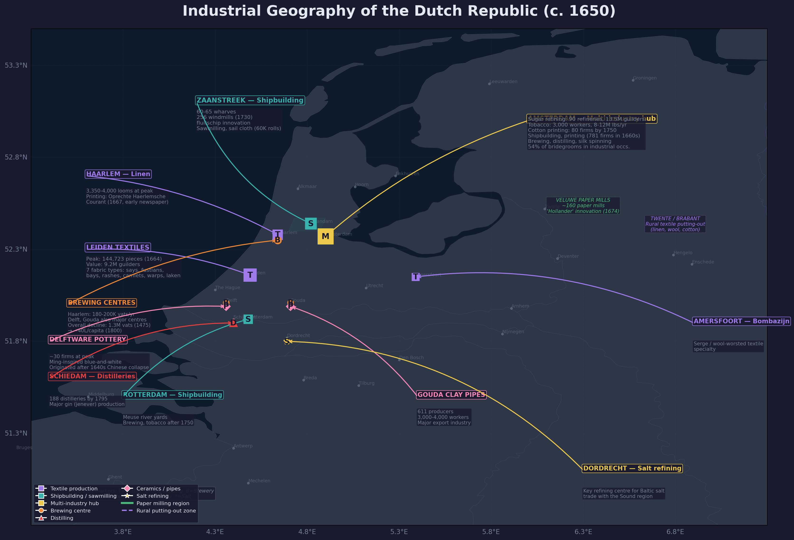
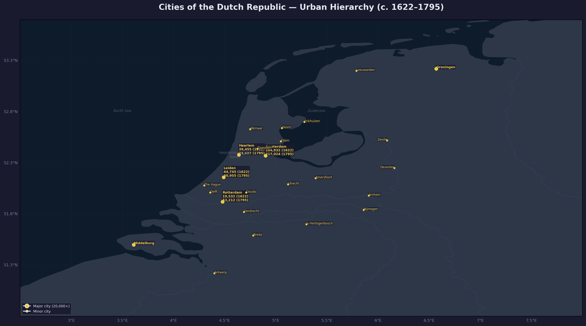
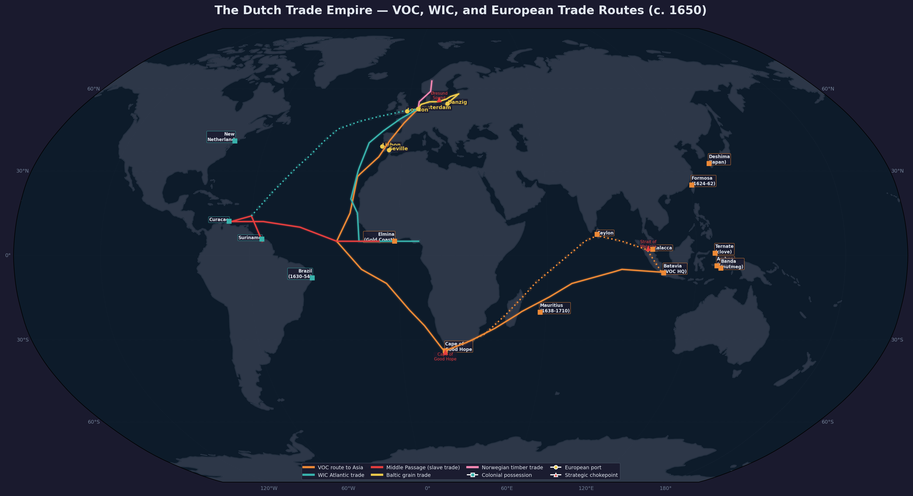

Amsterdam as the Republic’s multi-industry hub: 90 sugar refineries, tobacco processing (3,000 workers), cotton printing (80 firms), shipbuilding, printing, and brewing.

Urban hierarchy of the Dutch Republic c. 1622–1795. Amsterdam (105K–217K) dominates, followed by Leiden (45K), Haarlem (39K), and Rotterdam (20K–53K). Circle size reflects population.

The Dutch trade empire c. 1650: VOC route to Asia (orange), WIC Atlantic triangle (teal), Middle Passage slave trade (red), Baltic grain route (gold), and Norwegian timber (pink). Squares = colonial possessions; triangles = strategic chokepoints.
Amsterdam
Amsterdam was the economic powerhouse and largest city of the dutch-republic during the 16th and 17th centuries. From a modest trading port of perhaps 30,000 inhabitants at the start of the Revolt, it grew into a metropolis of some 200,000 by mid-century — the unchallenged centre of world commerce, finance, and shipping. Its rise was intimately bound up with the fortunes of the Republic itself: the fall of Antwerp (1585), the influx of Southern Netherlandish refugees, and Amsterdam’s own late but decisive conversion to the rebel cause in 1578 all propelled its astonishing Golden Age. ^[source: prak-dutch-republic-17th-century.txt]
The Alteratie (1578)
Until 1578, Amsterdam’s Catholic magistracy remained loyal to the Spanish crown, making the city a dangerous Spanish bastion within Holland. William of Orange called it the source of more damage to the cause than all the efforts of the enemy. ^[source: motley-dutch-republic-vol2.txt] After years of failed plots and attempted surprise attacks, the so-called “Satisfaction of Amsterdam” was finally concluded on 8 February 1578, brokered by deputies from Utrecht. The treaty established nominal toleration for both faiths — Catholics kept their churches while the Reformed were permitted to worship outside the walls — and brought the city within Orange’s stadholderate. This event, known as the Alteratie (the “Alteration”), marked the transfer of power to the Protestant faction. The civic militias were reorganised from three elite guilds into sixty neighbourhood companies, compulsory service was introduced for propertied men, and Amsterdam definitively joined the side of the Revolt. ^[source: motley-dutch-republic-vol3.txt, prak-dutch-republic-17th-century.txt]
Population Explosion
Amsterdam’s growth after the Alteratie was explosive. Its population scarcely grew at all between 1550 and 1585, but in the twenty-five years after 1585 it doubled. By 1600 Amsterdam had perhaps 70,000 inhabitants; Motley records it reaching 130,000 by the time of the Twelve Years’ Truce (1609–1621), and it would double again in the following decades. ^[source: motley-united-netherlands.txt, prak-dutch-republic-17th-century.txt] By mid-century Amsterdam had surpassed 200,000 inhabitants, making it the third-largest city in Europe after London and Paris. This growth was fuelled almost entirely by immigration: one-third of those marrying in Amsterdam in the 17th century were foreign-born, drawn by the city’s insatiable demand for labour and its reputation for religious tolerance. Flemings and Brabanters fleeing the Inquisition, German refugees from the Thirty Years’ War, Scandinavian seamen, Portuguese Jews, and later French Huguenots all poured into the city. ^[source: prak-dutch-republic-17th-century.txt]
Demography and Population
De Vries and van der Woude provide the most precise population data for Amsterdam. The 1622 census — the first reliable headcount — recorded 104,932 inhabitants within the city. By 1795 that figure had risen to 217,024, an increase of 107 percent, making Amsterdam one of only four Holland cities (alongside Rotterdam, The Hague, and Schiedam) to have a larger population at the end of the eighteenth century than at the earlier count. ^[source: de-vries-woude-first-modern-economy.txt, Table 3.10] Most other cities in Holland — Leiden, Haarlem, Delft, Gouda — lost between 20 and 50 percent of their inhabitants over the same period.
Amsterdam’s population peak came later, reaching an estimated 220,000 in the 1680s and climbing further to approximately 240,000 in the 1720s. The city then hovered in the 230,000–240,000 range until about 1780, when a gradual decline set in that was not reversed until after 1815. ^[source: de-vries-woude-first-modern-economy.txt, Ch. 3] Because Amsterdam’s population resisted the general deurbanization trend longer than any other Dutch city, it became ever more dominant within the Republic’s urban system.
The city’s demographic profile reveals much about its social character. Marriage patterns shifted markedly over time: Amsterdam brides marrying for the first time in 1626–27 did so at an average age of 24.5 years, and nearly 90 percent had married by age 30. By 1676–77 the average had risen to 26.5 years, and by 1776–77 it had reached 27.8 years, with a full third of brides marrying after their thirtieth birthday. ^[source: de-vries-woude-first-modern-economy.txt, Table 3.14] These rising marriage ages reflected a tightening economic environment and a changing sex ratio. Before 1660, more men than women entered first marriages in Amsterdam; thereafter the reverse was always true, indicating a fundamental shift in the gender composition of immigration. ^[source: de-vries-woude-first-modern-economy.txt, Ch. 3]
The Golden Age Economy
Amsterdam was the undisputed commercial capital of the Republic. The city’s wealth was built on the Baltic grain trade — the moedernegotie or “mother of all trades” — from which Amsterdam merchants controlled the supply of grain to all of Europe. Around this core grew a vast web of commerce: herring, salt, wine, textiles, shipbuilding, and the luxury trades. Sugar refineries multiplied from three (1603) to sixty (1661). Tobacco-spinning works employed thousands. The city’s merchant fleet was the largest in the world, and Motley noted that at any given time a thousand ships lay in its harbour, leading the Earl of Leicester to compare Amsterdam to Venice “for situation and splendour.” ^[source: motley-united-netherlands.txt, prak-dutch-republic-17th-century.txt]
The VOC and the Amsterdam Chamber
The Dutch East India Company (VOC), founded in 1602, was the largest corporation of its age — and Amsterdam was its heart. The Amsterdam Chamber of the VOC contributed half the company’s capital (one million florins) and held thirty of the seventy-eight director seats. ^[source: motley-united-netherlands.txt, prak-dutch-republic-17th-century.txt] The city became the VOC’s operational headquarters, the point from which fleets sailed for the East Indies and to which they returned laden with spices, silks, and porcelain. Many of the wealthiest men in Amsterdam — Cornelis Speelman, Joan van Hoorn, Cornelis van der Lijn — made their fortunes as VOC governors-general in Batavia. ^[source: prak-dutch-republic-17th-century.txt]
The Exchange Bank (1609) and the Stock Exchange
The Amsterdamsche Wisselbank (Exchange Bank), founded in 1609, transformed Dutch finance. It provided reliable transfer and settlement services, effectively eliminating the chaotic variety of circulating coinage and stabilising the guilder. The Trip family alone processed more than 7 million guilders through the bank in 1666. ^[source: prak-dutch-republic-17th-century.txt] Alongside the bank, the Amsterdam Stock Exchange — depicted in a famous 1611 engraving by Claes Jansz Visscher — became the world’s first continuous securities market, trading VOC shares, bonds, and derivatives. Amsterdam thus became the financial centre of Europe, a position it would hold well into the 18th century. ^[source: prak-dutch-republic-17th-century.txt]
The Canal Ring and Urban Expansion
The Twelve Years’ Truce (1609–1621) triggered an ambitious building programme that doubled the city’s surface area and gave Amsterdam its famous canal ring. The plan created two distinct zones: the Jordaan district, with narrow streets and modest canals for working-class housing and industry, and the three grand parallel canals — the Herengracht (Gentlemen’s Canal), Keizersgracht (Emperor’s Canal), and Prinsengracht (Prince’s Canal) — lined with spacious lots for merchant mansions. Industry was forbidden along these canals. The architect Philips Vingboons designed many of the stately canal houses for the Amsterdam elite, while his contemporary Jacob van Campen designed the new town hall (begun 1648), a masterpiece of Dutch classicism whose Citizens’ Hall featured a marble floor mapping the hemispheres with Amsterdam prominently displayed. ^[source: prak-dutch-republic-17th-century.txt]
Religious Tolerance and Immigration
Amsterdam’s relative religious tolerance was a cornerstone of its success. The Union of Utrecht (1579) guaranteed freedom of conscience, and Amsterdam interpreted this liberally — not out of ideology but from commercial pragmatism. The city admitted Portuguese Jews (the first had arrived by the 1590s), dissenting Protestants (Mennonites, Lutherans, Arminians), and Catholics, who worshipped discreetly in hidden churches (schuilkerken). In contrast to the strict Calvinist orthodoxy demanded elsewhere, the Amsterdam authorities actively resisted clerical attempts to enforce religious uniformity, seeing tolerance as the price of attracting the skilled immigrants and merchants who powered the economy. ^[source: prak-dutch-republic-17th-century.txt] Motley noted that the city’s wealth was built on “religious and political liberty, and uncontrolled access to the ocean.” ^[source: motley-united-netherlands.txt]
The Art Market and Rembrandt
Amsterdam was the epicentre of the Dutch Golden Age art market. A newly affluent bourgeoisie with money to spend on decoration, combined with the absence of both a court and a dominant church as patrons, created a uniquely commercial art market. Painters produced for an open market, and the city attracted artists from across the Republic. Rembrandt van Rijn (1606–1669) spent his most productive years in Amsterdam, where he painted The Night Watch (1642), etched portraits of the merchant elite like Jan Six, and produced the monumental The Conspiracy of Claudius Civilis (1661–1662) for the new town hall (though it was soon removed). Rembrandt lived in the Jodenbreestraat, an area also home to a small African community and many artists. His pupils and contemporaries — Govert Flinck, Gerard Dou, and others — kept Amsterdam at the centre of European painting. ^[source: prak-dutch-republic-17th-century.txt]
Shipbuilding and Maritime Industry
The Zaanstreek north of Amsterdam — and the city’s own wharves — made the region the world’s leading shipbuilding centre. Standardised designs and specialised wind-powered sawmills enabled Dutch shipyards to produce vessels faster and more cheaply than any competitor. The VOC employed thousands in its Amsterdam shipyards, and the city’s fleet of herring busses, fluyts (cargo vessels), and warships dominated the seas. Around 1680, 50,000 men were active in the Dutch shipping industry, a large proportion of them based in or sailing out of Amsterdam. ^[source: prak-dutch-republic-17th-century.txt]
Economic Geography and Trade Hub
Amsterdam functioned as the central entrepot of the Dutch Republic, the hub around which the entire urban network revolved. De Vries and van der Woude describe how smaller ports such as Hoorn and Harlingen developed their specialisations in timber, salt, and fish “in the context of the Amsterdam entrepot,” requiring systematic recourse to the central market for redistribution. ^[source: de-vries-woude-first-modern-economy.txt, Ch. 9] Even Rotterdam, the Republic’s second port, regularly moved goods intended for re-export to Amsterdam, and vice versa. The VOC’s practice of returning ships to six different ports generated a constant need for the redistribution of colonial commodities, all centred on the Amsterdam market.
The city’s commercial reach extended far beyond the Republic’s borders. By 1600 Amsterdam regularly quoted exchange rates with ten locations — Antwerp, Danzig, Frankfurt, Hamburg, Cologne, London, Nuremberg, Paris, Rouen, and Venice — and by the early eighteenth century this network had expanded to twenty-five locations. ^[source: de-vries-woude-first-modern-economy.txt, Ch. 4] An observer in 1701 stated that “Amsterdam is the place where very nearly all the bills payable within Europe are drawn, remitted or otherwise discounted and traded.” ^[source: de-vries-woude-first-modern-economy.txt, Ch. 4]
The Amsterdam entrepot was also the gateway through which Swedish iron, copper, and armaments reached European markets. The Trip family and other Dutch-based entrepreneurs oriented Swedish trade toward Amsterdam during the Thirty Years’ War. ^[source: de-vries-woude-first-modern-economy.txt, Ch. 9] In the eighteenth century, as Hamburg emerged as a competitor, Amsterdam’s dominance in colonial produce, sugar refining, and shipping came under pressure, but the city remained a formidable commercial centre.
Amsterdam’s warehouses were colossal. During the financial crisis of 1772–73, when banking firms began to fail, one consequence was that “Amsterdam warehouses [filled] with unsaleable goods.” ^[source: de-vries-woude-first-modern-economy.txt, Ch. 4] The sheer volume of commodities — Baltic grain, Swedish metals, colonial sugar and tobacco, French wine, herring, salt — that passed through these warehouses was unrivalled in Europe.
Financial Centre
The Amsterdam Wisselbank (Bank of Amsterdam), established in 1609, drew upon the Italian tradition of the municipal deposit and clearing bank — a tradition with no precedent in Antwerp or anywhere else in Northern Europe. ^[source: de-vries-woude-first-modern-economy.txt, Ch. 4] It took deposits, effected transfers between accounts (the giro function), and accepted (paid) bills of exchange. Merchants were required to make all bills of 600 guilders or more payable via the Bank, which effectively forced all substantial merchants to open an account. The Bank succeeded instantly in attracting depositors, who “became the envy of Europe for their access to deposit, transfer, and payment services that were trustworthy, safe, efficient, and virtually costless.” ^[source: de-vries-woude-first-modern-economy.txt, Ch. 4]
Over the seventeenth century, the Wisselbank grew with Amsterdam’s commerce to become “the clearinghouse of world trade, settling international debts and effecting transfers of capital” on a continuous basis rather than at long intervals as had been the practice of the old fairs. ^[source: de-vries-woude-first-modern-economy.txt, Ch. 4] Deposits in the Wisselbank rose steadily from 1609 through the early eighteenth century, a graph that tracks the city’s rise as a financial centre (van Dillen’s data, reproduced in Figure 4.3).
Beyond the Wisselbank, Amsterdam developed a sophisticated capital market that by the early eighteenth century attracted international borrowers. After the Republic adopted a policy of neutrality in 1713, foreign lending became purely commercial rather than diplomatic. An Austrian loan floated in 1714 through the Amsterdam market offered 8 percent interest, whereas an earlier States-General-guaranteed Austrian loan paid only 5 percent — the divorce of international finance from diplomatic consideration was a progressive step for the Amsterdam capital market. ^[source: de-vries-woude-first-modern-economy.txt, Ch. 4]
The London-Amsterdam axis became the backbone of European finance. By 1723, English joint-stock companies and certain government bonds were traded jointly on the London Stock Exchange and the Amsterdam Beurs. ^[source: de-vries-woude-first-modern-economy.txt, Ch. 4] Dutch investors poured into English bonds until the Fourth Anglo-Dutch War (1780–84) provoked a shift toward French, Spanish, Polish, and American securities. By 1803 the Dutch had bought over 30 million guilders’ worth of United States government bonds — one-quarter of the total U.S. federal debt. ^[source: de-vries-woude-first-modern-economy.txt, Ch. 4]
Industry and Manufacturing in Amsterdam
Despite its reputation as a centre of shipping, trade, and commerce, Amsterdam was also a major industrial city. De Vries and van der Woude show that in the period 1676–1700, 54 percent of the city’s bridegrooms declared an occupation with an industrial or artisanal character. ^[source: de-vries-woude-first-modern-economy.txt, Ch. 8] Although Amsterdam held no special importance in the textile industry compared to Leiden, even here textiles claimed 26 percent of industrial grooms — implying some 14 percent of the city’s married men were active in textile production.
Sugar refining was Amsterdam’s most famous processing industry. A 1662 description relates that each Amsterdam sugar refinery annually purchased 50,000 to 60,000 guilders’ worth of pottery vessels for the refining process, and four pottery works operated exclusively to supply this demand. ^[source: de-vries-woude-first-modern-economy.txt, Ch. 8] So durable was this industry that a group of refiners formed a jointly held pottery company in 1776 that continued in existence until 1879.
Tobacco processing was equally significant. By 1700 Amsterdam firms dominated European tobacco markets wherever state monopolies did not obstruct their access. The city’s processors developed sophisticated blends drawing on New World, domestic, and European tobaccos. ^[source: de-vries-woude-first-modern-economy.txt, Ch. 8] The expansion of Amsterdam’s tobacco-processing industry was intimately linked to the Gouda pipe-making industry, and the city’s commercial authorities — Holland’s provincial government — aggressively protected the industry, notably in the 1689 “tobacco war” on the Zuider Zee when armed ships were deployed to enforce export duties on leaf tobacco to protect Amsterdam processors. ^[source: de-vries-woude-first-modern-economy.txt, Ch. 8]
Cotton printing emerged after 1680, concentrated primarily in Amsterdam. The industry sought to imitate Indian printed cottons imported by the VOC. The cotton printers concentrated just outside the city along the river Amstel, and the industry employed women in large numbers, especially in drawing and colouring patterns. ^[source: de-vries-woude-first-modern-economy.txt, Ch. 8] After England restricted Indian calico imports, Amsterdam’s cotton printers gained a larger market.
Silk spinning employed hundreds of girls between eight and sixteen in a municipal facility established or subsidised by the city in 1682, following Haarlem’s lead. ^[source: de-vries-woude-first-modern-economy.txt, Ch. 8]
Brewing and distilling were also major industries. Amsterdam’s distillers of alcohol were numerous, and a 1742 tax record reveals the presence of 79 millers (though there were 122 in 1734) and 107 butchers whose incomes ranged widely, some earning as little as 600 guilders and others much more. ^[source: de-vries-woude-first-modern-economy.txt, Ch. 11.5]
Income Distribution and Social Stratification
The 1742 tax registers for sixteen Holland cities, analysed in detail by De Vries and van der Woude, offer an extraordinary window into Amsterdam’s income hierarchy. The wholesale trade sector — with 2,802 taxable representatives in the sixteen cities — controlled the largest total income (8.6 million guilders) of any economic category. Within this sector, unspecified “merchants” averaged an income of nearly 4,000 guilders per year, the highest among all commercial groups. ^[source: de-vries-woude-first-modern-economy.txt, Tables 11.23–11.24] Wine merchants (694 individuals across the sixteen cities) averaged 1,679 guilders, brokers averaged 2,106, and cotton merchants averaged 2,474 guilders.
Amsterdam’s shopkeepers formed a vast stratum. Of 3,104 taxed shopkeepers, nearly 40 percent fell within the 600- to 800-guilder income range, and an estimated total of 4,000 to 5,000 shopkeepers operated in the city — the equivalent of 18 to 23 shopkeepers per 1,000 population. ^[source: de-vries-woude-first-modern-economy.txt, Table 11.22] The tax commissioners excused 136 shopkeepers as too poor to tax, suggesting “the tip of an iceberg of lower-income shopkeepers.” ^[source: de-vries-woude-first-modern-economy.txt, Ch. 11.5]
Amsterdam’s manufacturers in the 1742 register stood head and shoulders above those in other cities. Thirty-five “unspecified manufacturers” (fabrikeurs) in Amsterdam averaged 4,250 guilders, compared with 2,125 in Haarlem and 1,520 in Leiden, and within the Amsterdam group incomes ranged from 600 to a staggering 24,000–26,000 guilders. ^[source: de-vries-woude-first-modern-economy.txt, Ch. 11.5]
At the top of the income pyramid stood the political elite. The holders of high public office — burgemeesters, schepenen, raadsheren — all had average incomes at or above 7,000 guilders, and there were nearly 300 such men across Holland. ^[source: de-vries-woude-first-modern-economy.txt, Ch. 11.5] These incomes did not derive entirely from salaries; a substantial private fortune was an essential qualification for high office.
The accumulation of private fortunes in Amsterdam was remarkable. In 1585 only six Amsterdammers possessed wealth exceeding 100,000 guilders; the richest, burgemeester Dirck Jansz. Graaf, was worth perhaps 150,000 guilders (he was also an iron merchant). By 1631 nearly 100 Amsterdammers admitted to wealth of at least 100,000 guilders, and the richest were worth over 400,000. Twenty years later, the wealthiest men — Guillielmo Batholotti and Louis de Geer — were genuine millionaires. The fortune of burgemeester Jeronimus de Haze de Georgio, who died in 1725, was altogether exceptional at 3.3 million guilders. ^[source: de-vries-woude-first-modern-economy.txt, Ch. 11.5]
Amsterdam’s regent families, though they formed an oligarchy with elaborate “contracts of correspondence” to control office-holding, were never a fully closed group. There were always non-regental families with the wealth to support the lifestyle of the patriciate, and through marriage and selection into the vroedschap, individuals were drawn continually from the high burgerij into the patriciate. ^[source: de-vries-woude-first-modern-economy.txt, Ch. 11.5]
Political Role in the Republic
Amsterdam’s economic weight gave it enormous political influence within the Republic. In the States of Holland, Amsterdam held one of eighteen city votes — formally equal to tiny Schoonhoven (population 3,000) — but in practice its opinion carried decisive weight. ^[source: prak-dutch-republic-17th-century.txt] The city’s regent families — the Bickers, the Valckeniers, the Huydecopers, the Trips — formed a tight oligarchy that controlled the city’s delegation to the States of Holland and could swing provincial policy. Amsterdam was the stronghold of the States party (republican, anti-Orange) during the conflict with maurice-of-nassau over the Truce (1609), and it was the centre of opposition to peace with Spain, fearing the revival of Antwerp’s commerce. In 1650, stadholder William II attempted to occupy Amsterdam militarily, and the city’s resistance became a defining moment in the struggle between Orangist centralism and civic republicanism. ^[source: prak-dutch-republic-17th-century.txt]
Decline After 1672
The Year of Disaster (1672) — the French invasion and the lynching of the De Witt brothers — marked the beginning of Amsterdam’s relative decline. The city’s population growth stalled; the final canal-ring extension (1660s) was never fully developed. The Anglo-Dutch Wars and French protectionism eroded commercial supremacy. The regent class became more closed and rentier in character: by the late 17th century, only one-fourth of Amsterdam’s regents were still active in trade, compared with three-fourths in 1600–1625. ^[source: prak-dutch-republic-17th-century.txt] The Undertakers’ Riot of 1696 — an eruption of popular violence against a new burial-tax scheme — revealed the social tensions beneath the city’s prosperity. Yet Amsterdam remained a great commercial and financial centre well into the 18th century, even as the Republic’s geopolitical power waned. ^[source: prak-dutch-republic-17th-century.txt]
Legacy
Amsterdam in the 17th century was the archetype of the modern commercial city: a place where capital, labour, and ideas flowed freely across borders, where religious toleration was practised as a matter of self-interest, and where a bourgeois rather than aristocratic ethos shaped public life. Its institutions — the Exchange Bank, the stock market, the joint-stock company — became models for the world. The city’s Golden Age left a physical legacy in its canal ring, its gabled merchant houses, and its town hall (now the Royal Palace), all of which endure as monuments to the century when Amsterdam stood at the centre of the global economy. ^[source: prak-dutch-republic-17th-century.txt]
Amsterdam is one of the central urban anchors of the wider dutch-republic wiki network. ^[source: prak-dutch-republic-17th-century.txt]